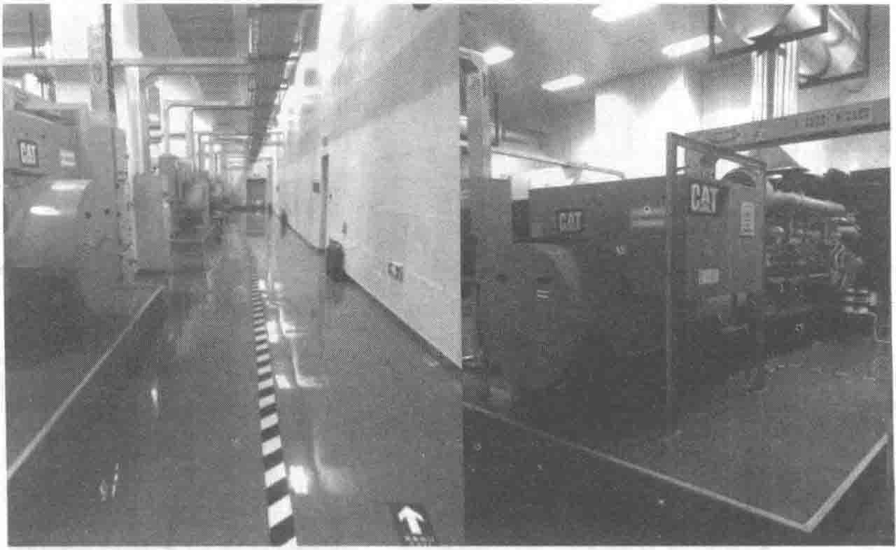

水温度在32℃以上，保证在低温时（冬季）的快速启动和带载能力。
- 发电机配置有防潮加热器，防止因空气湿度过高降低发电机绝缘性能而造成安全风险。
- 满足GB/T 2820系列标准中G3等级要求。该机组可以承受负载突加75%，以保证发电机组快速启动后可以快速地加载。
- 并机主控系统冗余设计，有效提高了并机系统的可靠性。
- 采用原装进口WOODWARD并机控制模块，与发电机组控制具有良好的匹配性，提高了并联运行的时间，降低负载分配误差。
- 发电机采用2/3绕组节距和模绕定子线圈，有效降低了非线性负载产生的谐波对发电机系统的干扰和影响。
- 发电机可以承受负载超前功率因数至0.9，而输出功率没有任何折损。
- 任意一套油路系统PLC控制出现故障时，自动切换至另外一套PLC控制系统，保证系统供油的可靠性。
（3）发电系统介绍
1）柴油发电机组
发电机组分别安装在两个发电机房内，采用建筑顶部直接进风，侧外墙直接排风方式，最大化满足机组进排风的需求。排风降噪室单独设置，有效降低噪声。

发电机组并机10kV金属铠装移开式开关柜为行业一线品牌原厂柜，柜内断路器、综保的开关量信号、每台开关柜或系统的电压、电流、频率、有功功率、无功功率、系统运行方式、以及实时电压、电流变化图表等重要参数全部引至并机监控屏，和发电机组各类信息全部集成到并机操作系统内，形成控制、监视、告警一体化监控平台。